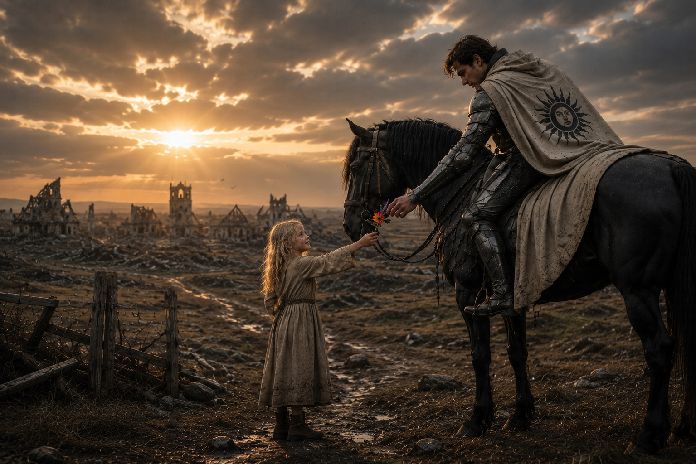
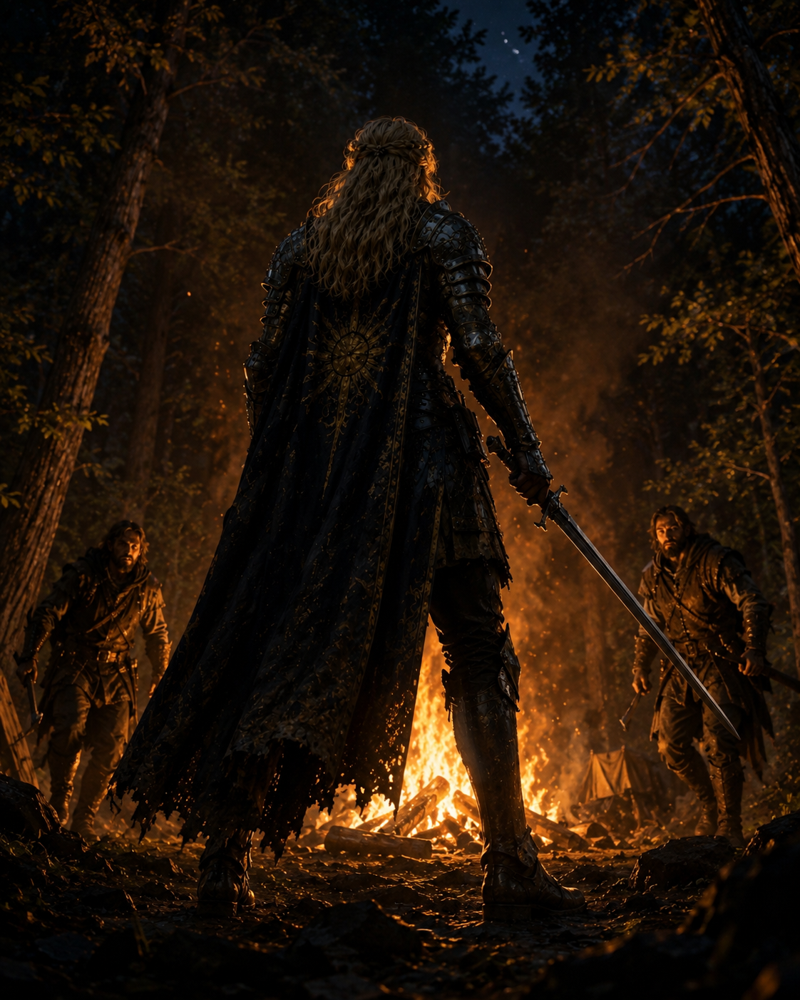
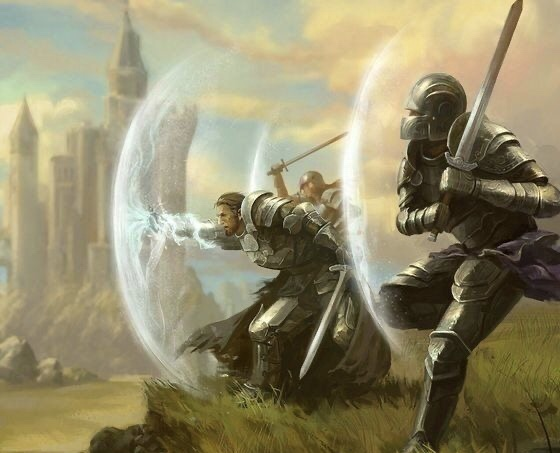

Cairn Aurumthariel
Cairn Aurumthariel is the keep and hold of the Keepers of Volelia.
It was built before the Great Deluge and remains inhabited in the current age.

“That the Keepers shall restrain from warfare is a pious wish not easily in this woeful world to be granted.”
The Keepers of Volelia are a Delmaran order, remembered in both the past and present ages, devoted to mercy, wonder, honor, and service.
Cairn Aurumthariel is the keep and hold of the Keepers of Volelia.
It was built before the Great Deluge and remains inhabited in the current age.
Because the Keepers cherish and preserve life, they are known for incredibly ornate steel armor.
The beauty of a Keeper's armor represents devotion to portraying the beauty of life, not the Keeper's means, riches, or worldly success.
They take pride in honoring the fallen, preserving tales of remembrance, and symbolizing the light of life through intricate carvings worked into their armor.
In seasons away from battle, each Keeper often works their own pieces with engravings and inlays, shaping the armor's beauty according to their own hand. Some favor severe or martial designs, others graceful, natural, masculine, feminine, or radiant forms.
Blue mineral and warm bronze or brass inlays are worked into the steel as each Keeper sees fit. These are not marks of riches, but of remembrance: humble materials shaped with patience so the carved tales catch the light.
A Keeper's armor can be studied as a treasure trove of engraved tales and symbols.

During the repeated conflicts between Axont and Kel Alari, Volelian knights are remembered for rescuing civilians from Sylmora.
On a few occasions, they claimed the city in third-party defiance of both armies, forcing a halt long enough to allow evacuation.
